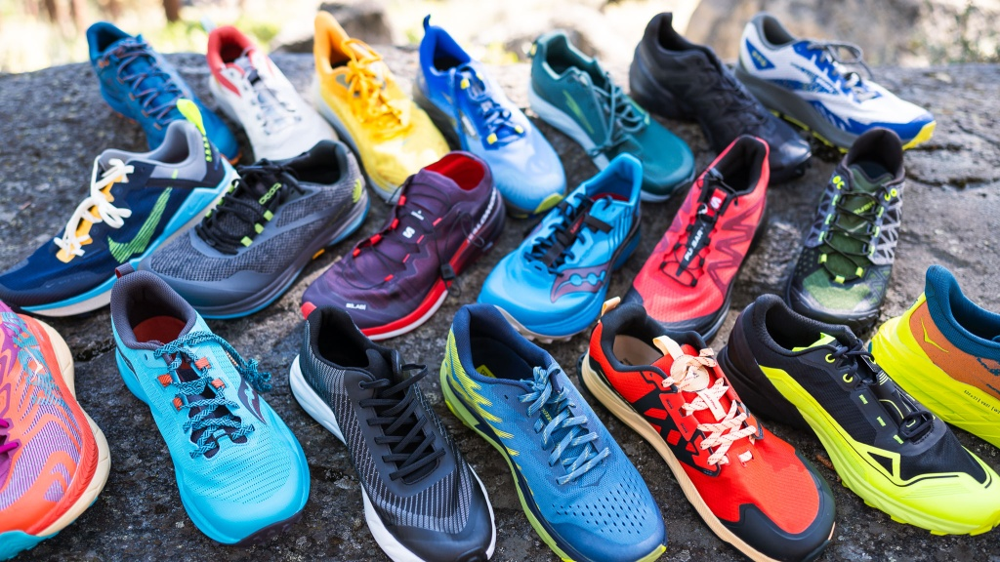

Run like the devil!
What is a running shoe rotation?
A running shoe rotation is essential for all runners who are serious about remaining injury-free, saving money in the "long run," and increasing the life of their shoes.
What shoes do I need in a running shoe rotation?
A typical running shoe rotation includes a daily trainer, a tempo shoe, a long run/recovery shoe, and a racer. Daily trainers are for your normal everyday runs — the Nike Pegasus line is a good example of a daily trainer. Tempo shoes are for speed workouts such as threshold runs or sprints. Recovery shoes should have a max cushion setup that goes easy on the muscles in your feet and legs. They still help you get miles in without being too hard on yourself. Race day shoes are ones you wear for — you guessed it — race day. They usually have a good cushioning setup, reactive foam, and a carbon fiber plate for efficient energy return.
What are the benefits of having a shoe rotation?
Different shoes work different muscles in your feet and legs. Having a rotation ensures certain muscles or muscle groups aren't overtrained or neglected. It also gives time for the foam in the sole of the shoe to decompress. Using the same shoe every day wears out the foam a lot faster, killing the longevity of the shoe.